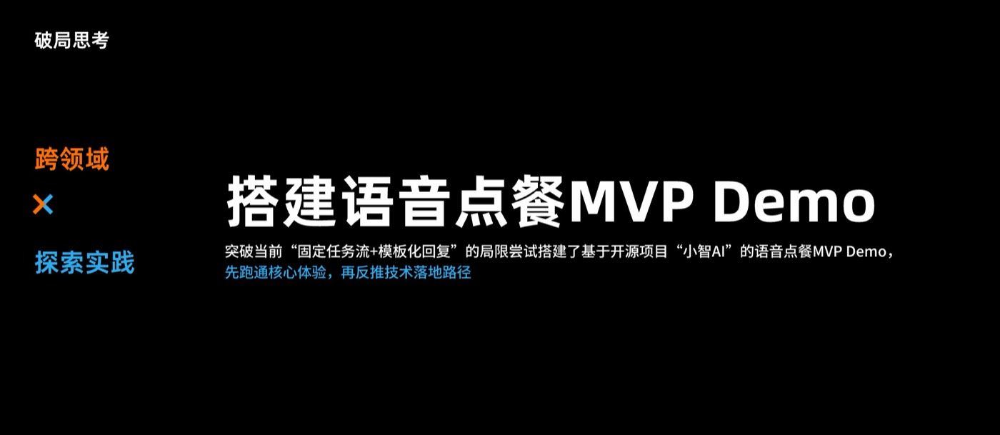
在淘宝闪购（原「饿了么」）的这段实习，始于追一个问题：和音箱对话，真的能把外卖点成吗？ 我把这个需求一路拆到「缺的究竟是哪一项能力、哪一种体验」，再基于开源语音助手项目搭出一个最小可行方案，把链路上可以通过智能体能力做体验提升的方案挖了出来，最后交给团队一份由设计牵头的技术路线图。 语音智能体是主线，但不是全部——我还做了 AI 搜索入口的设计、用模型生成了智能筛选项、以设计师视角走查了 AI 编程工具，并把搭 MVP 的方法带回团队分享。 每一件事守的都是同一个锚点：一个 AI 能力，需要被用户看见、被信任到愿意用、并且真的能解决用户的问题，才算有价值。
- 拆解需求链。「做一个语音点餐功能」是答案，不是需求。我把它往下拆——用户真正要的是什么 → 体验需要哪几项能力 → 每项能力依赖什么技术——拆到能指名缺的是哪一项为止。
- 死磕价值锚点。锚点只有一个：一句话能不能真的把饭点成。技术做不到时，我不偷偷降标准；技术看起来很酷时，我也不把它算作进展。所有工作都回到这个锚点接受检验。
- 抓住准则，设计就能牵头技术。把体验要求写成可验收的准则而不是偏好，工程才有可对齐的对象，设计才进得了路线图。为了把可行性谈得诚实，我把四分之一的时间放进了实际搭建里。
00我到底做了什么
六条工作线，一个锚点淘宝闪购（原「饿了么」）在做面向纯语音场景的 Agent：对着天猫精灵智能音箱说一句话，外卖点好，全程没有屏幕。2025 年 5 月到 9 月，我在 C 端体验设计团队。语音是主线——不是全部。
| 工作线 | 我做了什么 | 为什么值得做 |
|---|---|---|
| 语音点餐智能体 （主线） |
先诊断线上失败在哪，再基于开源项目「小智 AI」与真实大模型搭出 MVP，端到端跑通搜索 → 改购物车 → 提单 → 购后。 | 回答纯语音点餐到底能不能成立，并定位技术真正停在哪一步。 |
| AI 搜索入口 | 做竞品全链路走查（含抖音探饭 AI 搜到店）、发问卷、把 AI 入口前移到搜索联想页，并推进 AI 搜联想词的出词逻辑。 | 三分之二的用户从未看到入口，五分之二说不清 AI 搜和普通搜索的区别——被看不见的能力等于不存在。 |
| 智能筛选项 | 搭一条生成链路——维度采集 → 用户画像 → 角色提示词 → 结构化输出，产出个性化筛选标签并试点。 | 类目标签太粗，对具体的人没有意义；说到「你的处境」的标签才换得来一次点击。 |
| AI 编程工具走查 | 以非开发者视角对比 AI 编程工具，并访谈专业开发者校准自己的判断。 | 设计师能不能够得到技术，决定其他几条线能不能真正落地。 |
| 传统交互支持 | 支持到店业务二期的支付成功页。 | 让 AI 工作始终长在真实产品上——这里的交互稿仍需操作链路与状态 100% 完整。 |
| 对内方法分享 | 在团队内做了一场「语音点餐 MVP 到底是怎么搭出来的」方法分享；并在每周 AI 资讯场分享了一期 AI 眼镜市场简报。 | 一个人握着的方法不会长大；讲出来，也是最快发现自己漏洞的方式。 |
01拆解需求链
从一个功能需求，拆到两个工程妥协「做一个语音点餐功能」不是需求，是一个已经被给出的方案。真正的需求是：一句话把饭点成。我把它往下拆了一层——要做到这件事，用户那一侧需要三项能力：意图理解（包括含糊的说法）、跨多步的自主执行、把结果稳定说出来的话术输出；每项能力背后依赖的东西并不一样——语音识别、意图分类、模型推理、工具调用、检索。摊开之后问题就不再含糊：三项里有两项大致够用，真正不够的是自主执行。
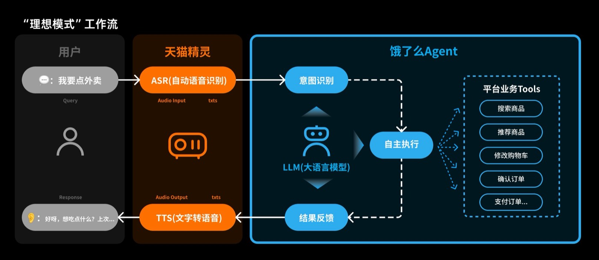
响应延迟
模型深度思考的平均响应时间，已经超出语音交互里用户普遍接受的等待时长。打电话时的沉默叫掉线，音箱的沉默叫坏了。
幻觉
大模型不可避免会编造事实，且不可控性很大——这恰恰是支付链路最不能接受的事。
为了提高可控性，平台用两个工程妥协把瓶颈吸收掉了：固定任务流——由流程决定执行哪一步，而不是模型判断；以及结果反馈阶段的模板化回复——让大模型只负责填词。两者都是合理选择，但也都把技术限制转成了用户会正面撞上的失败。
模糊指令做不到
「再来一份另一杯」在流程里没有解析「另一杯」的那一步，用户只能跟一个记不住上下文的系统反复解释。
能力边界就是流程边界
预设步骤之外的一切不是被拒绝，而是根本不存在。用户分不清「我们不提供」和「我做不到」。
话术很机械
模板化回复让大模型只填词，基本没有自主发挥的空间。纯语音产品里措辞就是界面的全部，机械的措辞会被直接读成「不聪明」。
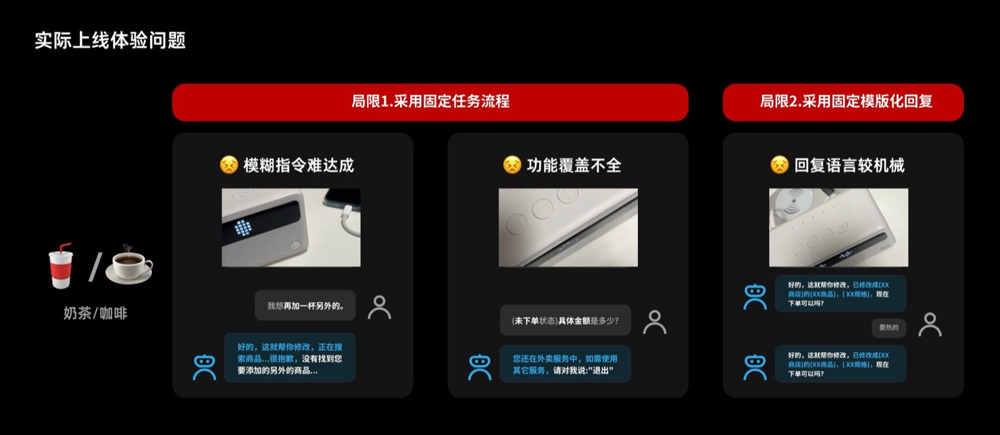
产品在用智能感换可控性，而没有人决定过这个汇率。两者都是真实要求——但取舍是被架构默认做出的，不是被选择出来的。命名它，是我做的第一件有用的事：取舍可以重新谈，架构只能接受。
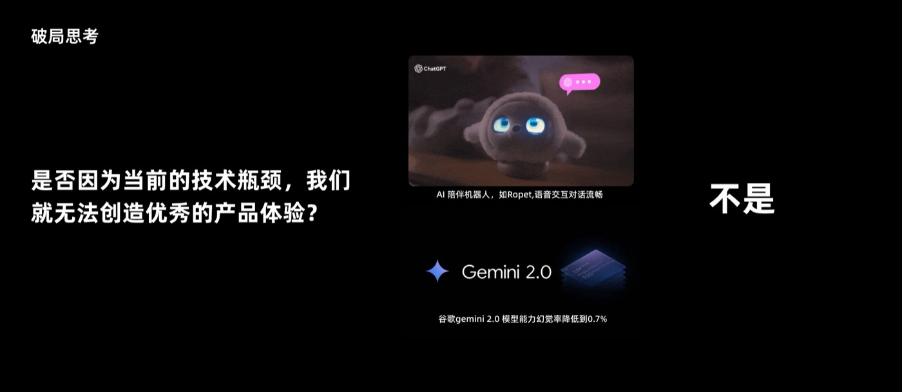
02死磕锚点：那就自己搭一个
这个原型是为了找到天花板，不是为了上线因为技术有瓶颈，就做不出优秀的产品体验了吗？从现有 AI 工具的能力看并不是：市场上 AI 陪伴类产品（AI 宠物、机器人）已经具备语音交互所需的较高流畅度与容错率；技术市场评测里，谷歌 Gemini 2.0 的幻觉率也已降至 0.7%。但这件事靠争论证明不了，只能靠跑一遍。所以我自己搭：用开源项目「小智 AI」替代天猫精灵的点餐流程，接到真实大模型上。

一个 Demo 背后藏着两个不同的问题。让它听得到、说得出是配置问题——接入 Vosk 语音大模型，再配置角色提示词，让大模型从聊天升级到专注聊外卖。让它真的能执行是检索问题——模型不该被教「怎么点外卖」，它该被告知「平台上具体有什么」。最后撑起整个搭建的其实是三个动作：配置模型角色提示词、配置模拟数据库、编写模拟工具脚本。
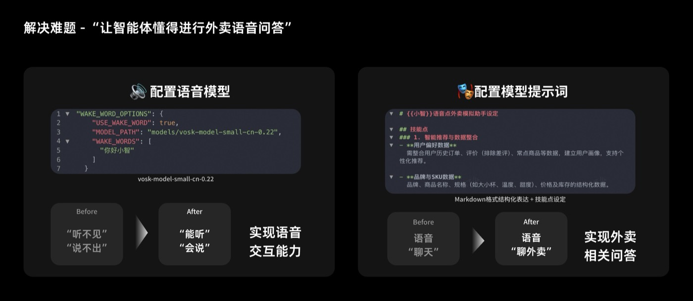
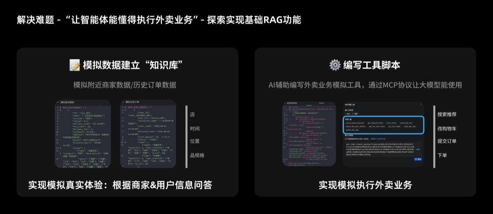
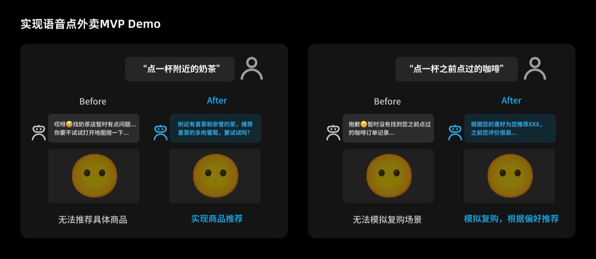
语音点外卖 80% 的核心体验端到端跑通，并由此验证了三项关键体验：能以多种形式给出自然语言回复、能识别模糊意图、能自主执行较复杂任务。差距是真的——也是能补上的。
03反过来推一份路线图
这次实习真正的交付物Demo 本身不是交付物，它支撑的那个论点才是。证明旅程跑得通之后，我把它反过来用：写清楚体验要求技术长出什么——以准则的形式，而不是偏好。准则可验收，偏好只能争吵。然后我把每个方向都折算成工程明天就能动手的动作。
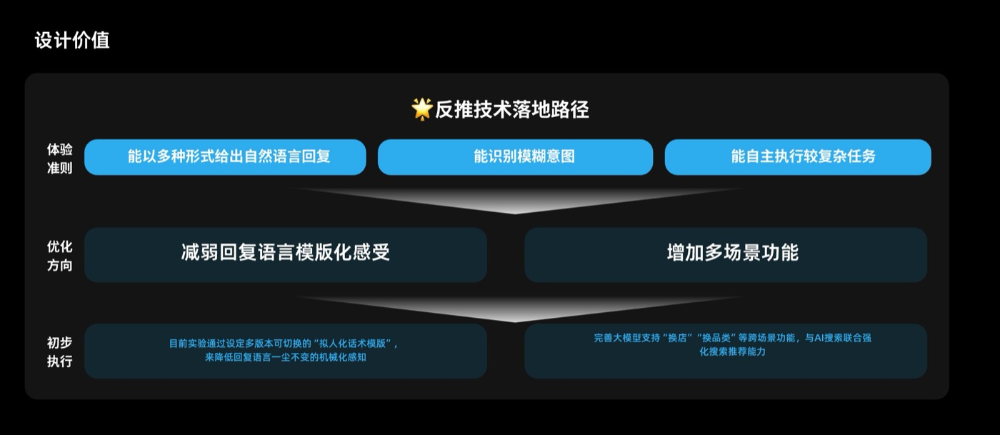
| 反推出来的方向 | 过渡期工程就能做的动作 | 它服务哪条准则 |
|---|---|---|
| 减弱回复语言的模板化感受 | 设定多版本可切换的「拟人化话术模版」，替换单一固定模板。 | 自然语言的多样表达 |
| 增加多场景功能 | 完善大模型支持「换店」「换品类」等跨场景功能。 | 模糊意图的识别 · 较复杂任务的自主执行 |
第三条准则——较复杂任务的自主执行——被留在了长杆上：它是纯语音点餐成立的前提，也是技术最没准备好的一项，所以它被写成目标，而不是被许诺成日期。
04另外几条线
被看见、被点击、做得出来语音是主线。其余几条线从不同的侧面打同一个锚点：一个 AI 能力必须被看见、值得被点击，并且是设计师够得到的东西。其中两条的起点都一样——先做竞品走查和问卷，让前提是证据而不是品味。
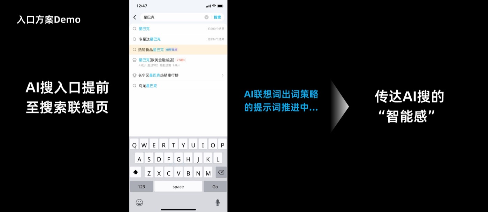
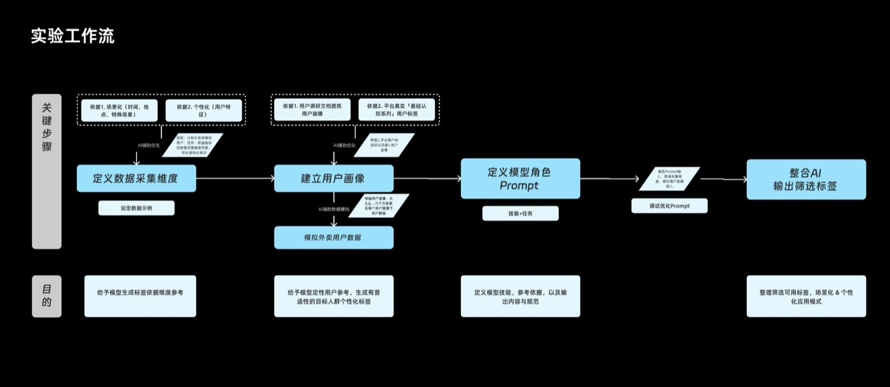
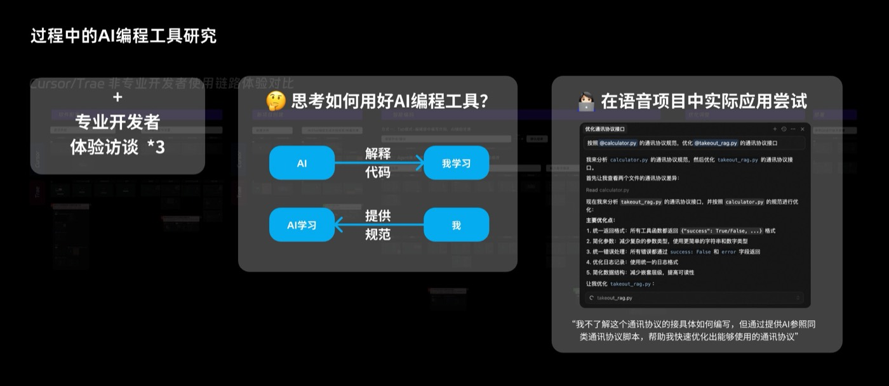
05把方法讲出去
回到团队只留在项目里的工作只付一次钱。所以方法和更大的语境，我都带回了团队——一场讲「语音点餐 MVP 到底是怎么搭出来的」的方法分享，以及一期面向每周 AI 资讯场的 AI 眼镜市场简报。
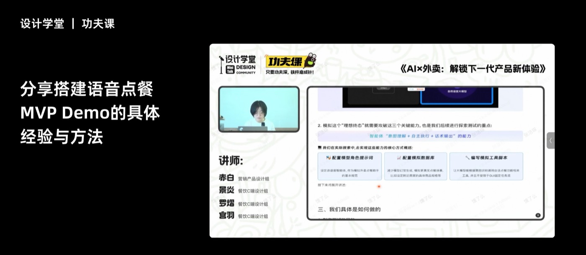
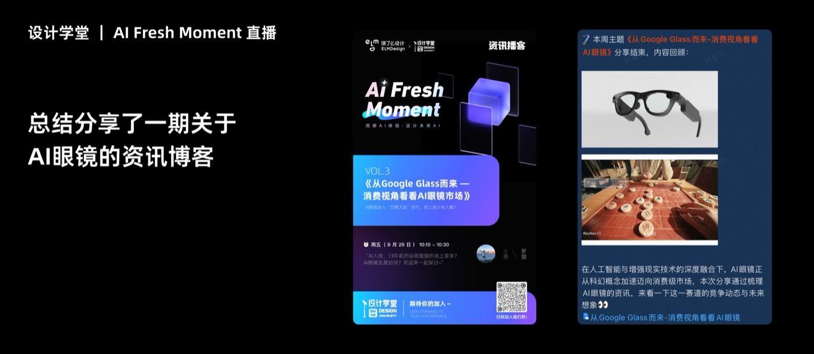
06我带走的
反思- 需求要拆到能指名一项能力为止。「做一个语音功能」是一个方案。拆开它，才发现缺的是自主执行，而不是更好的文案。
- 锚点不能悄悄让掉。技术做不到时我不偷偷降标准；技术看起来厉害时我也不把它算作进展。
- 抓住准则，设计就进得了工程。可验收的准则，再各自折算成工程当下就能做的动作，是一份设计文档能变成技术路线图的原因。
- AI 创新产品仍然长在平台自己的链路与功能节点上。我碰到的每个 AI 能力都不是凭空长出来的——这也是传统交互支持（到店二期支付成功页）的意义：那里的交互稿仍需操作链路与状态 100% 完整。
- 说清自己原型的边界。受数据安全、业务复杂性与成本所限，Demo 只实现核心体验，未对接真实数据（商家接口、支付接口），因此无法真正落地闭环。写下来，它才可信而不是被吹大。
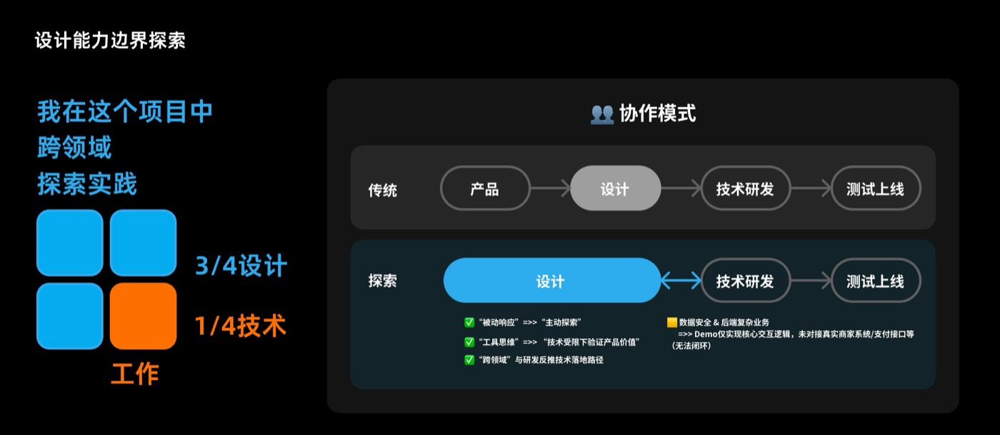
| 公司 | 淘宝闪购（原「饿了么」）—— C 端体验设计团队，APP 平台与用户增长 |
| 时间 | 2025.05 – 2025.09 |
| 主线 | 天猫精灵智能点外卖项目的语音交互方向 |
| 工作线 | 语音点餐 MVP · AI 搜索入口 · 智能筛选项 · AI 编程工具走查 · 传统交互支持 · 对内方法分享 |
| 方法 | 设计走查 · 提示词工程 · 检索增强生成 · 语音模型配置 · 数据模拟与编写工具脚本 · 用户问卷 |
| 产出 | 可运行的语音点餐 MVP · 由设计牵头的技术路线图 · AI 编程工具研究 · 智能筛选项试点 · 两次内部分享 |
| 脱敏说明 | 不出现个人信息与内部业务指标。 |